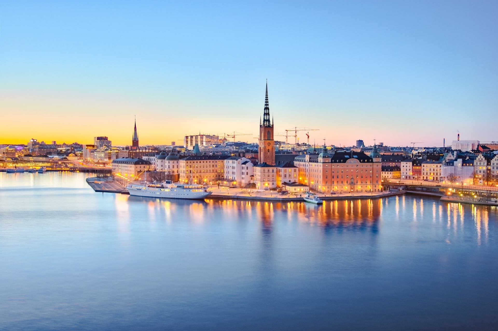
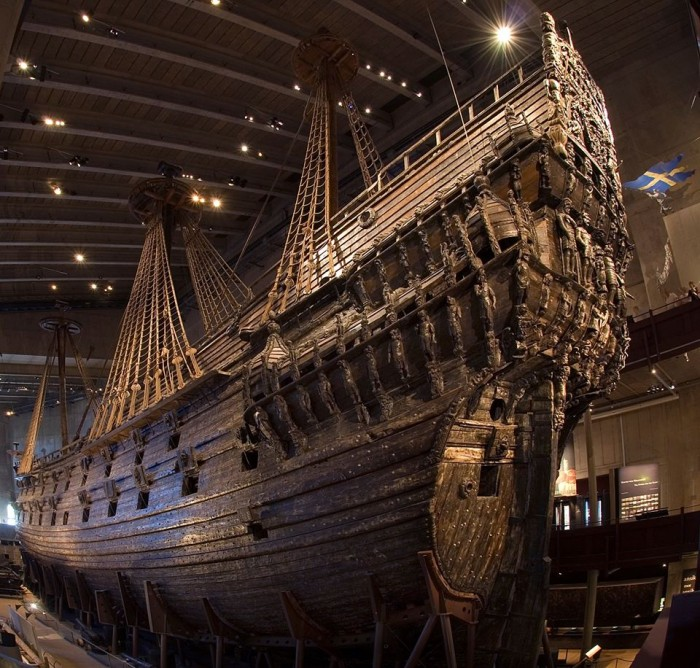
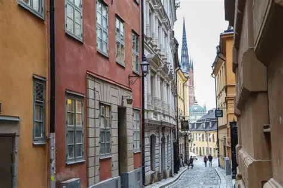
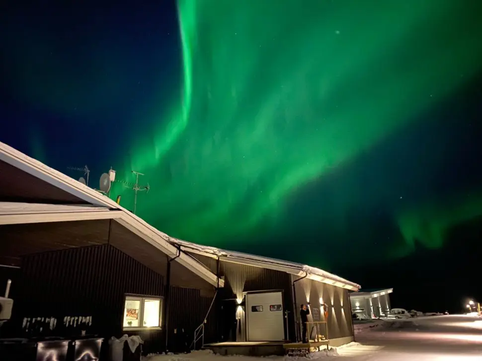
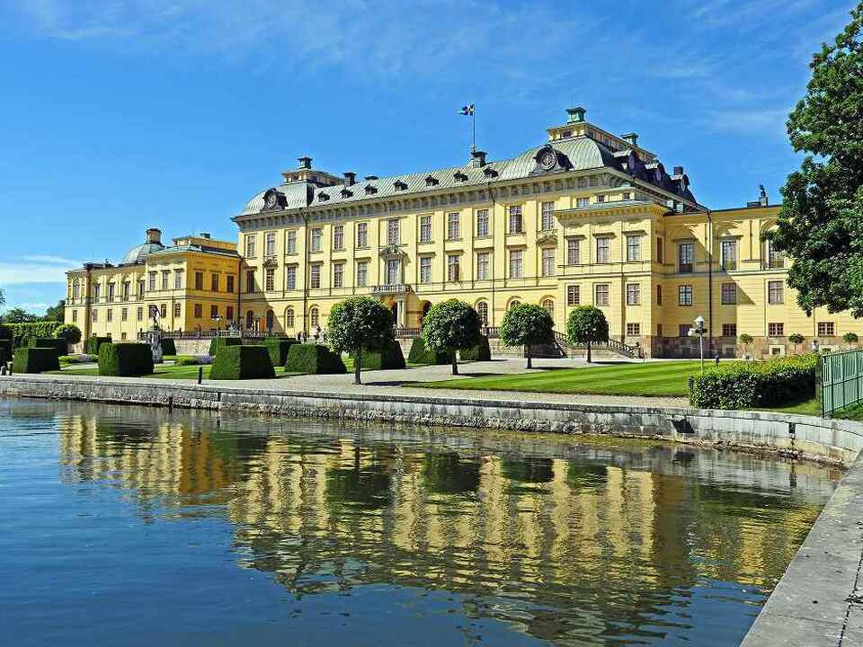

スウェーデン
ヴァーサ号博物館
世界で唯一現存する17世紀の戦艦を展示する、非常にユニークな海事博物館です。
ガムラスタン
ガムラスタン（Gamla Stan）はスウェーデン・ストックホルムの旧市街で、石畳の路地とカラフルな建物が立ち並ぶ、まるで絵本のような街並みが広がっています。
キルナ
キルナは北緯約68度のオーロラベルト直下に位置し、高い確率でオーロラを観測できる町です。
ドロットニングホルム宮殿
ドロットニングホルム宮殿はスウェーデン王室の住まいで、世界遺産にも登録された優雅な宮殿です。庭園や劇場も見どころです。